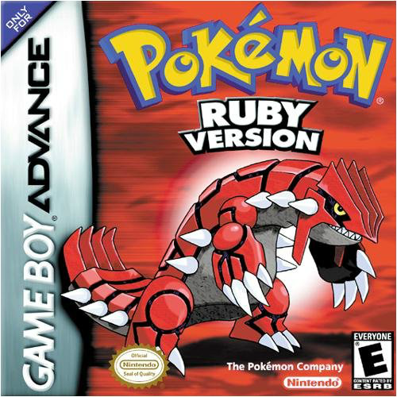

| Video Game Tier List | |||||
|---|---|---|---|---|---|
| Tier | Game 1 | Game 2 | Game 3 | Game 4 | Game 5 |
| S | TES V: Skyrim | Red Dead Redemption 2 | TES IV: Oblivion | |
GTA V |
| A | TES III: Morrowind | Counter Strike 1.6 | GTA: San Andreas |  | Pokemon X & Y |
| B | Star Wars: Jedi Survivor | Fallout 4 | Bloons TD 6 | Minecraft Pocket Edition | The Sims 4 |
| C | The Sims 1 | The Sims 2 | The Sims 3 | Counter Strike: Global Offensive | Dota 2 |
| D | Clash of Clans | Bloons TD Battles | NBA 2K16 | NBA 2K14 | NBA 2K24 |
This lab was another fruitful one for me. I got to learn how to create tables and forms for my webpages. In the future, I am looking to improve further, implementing more elements of tables and forms into my webpages, and creating better styles for them. It was easier to grasp tables than forms. What I definitely need to work on and play around more with are more form elements and styling, both for tables and forms.